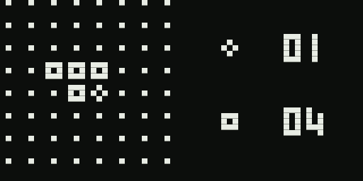

Iago for Two
M. Collins · DREAMER no. 10 (1981-06) p. 20 1K RAM


Reversi (Othello) for two players, with a random starting player. A cursor shows the chosen square and illegal moves are refused. Use C when you have no legal move.
Keys
0-7 for X then Y, F confirms, C passes the turn, other keys cancel.
Files
| File | Version | Load | Run |
|---|---|---|---|
| Iago for Two.c8 | main | 0200-03FF | C000 |
Listing as transcribed (with notes): iago_for_two.txt
Source
DREAMER no. 10 on archive.org, p. 20 (PDF page 22). Author: M. Collins.
Corrections applied
None.
Open doubts
None.